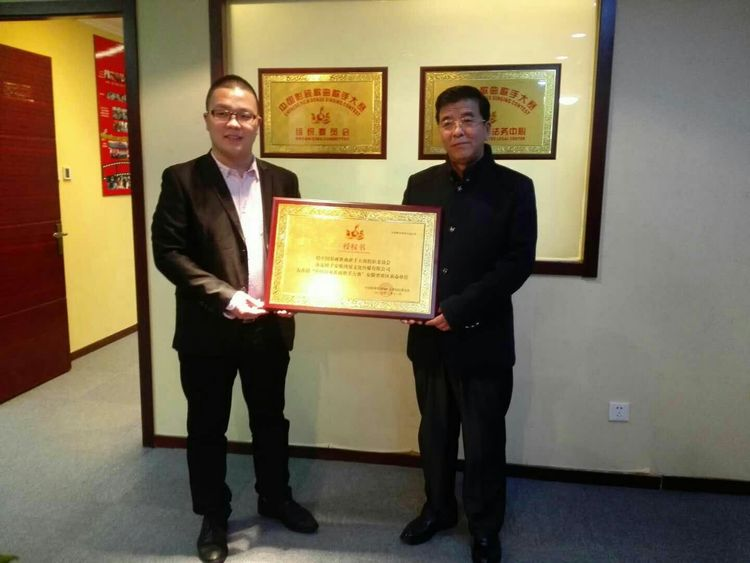
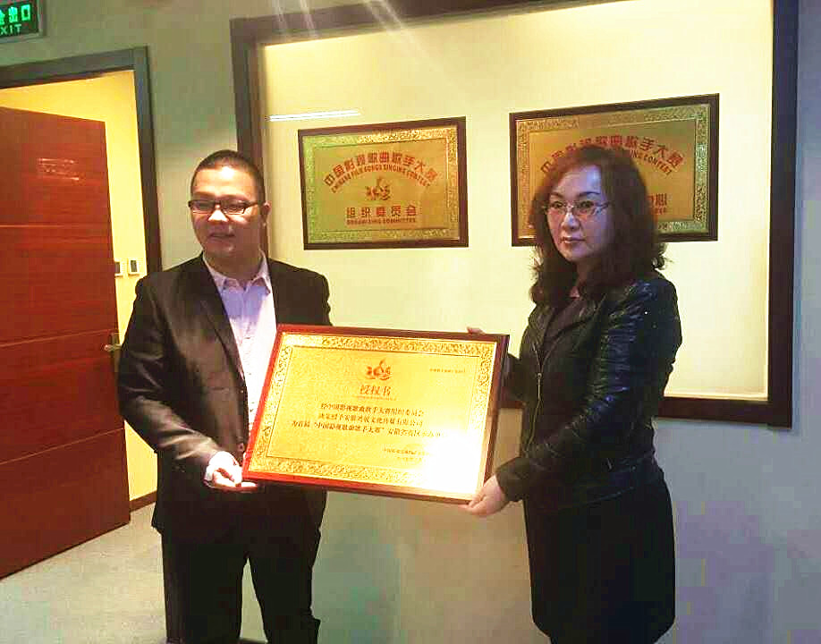
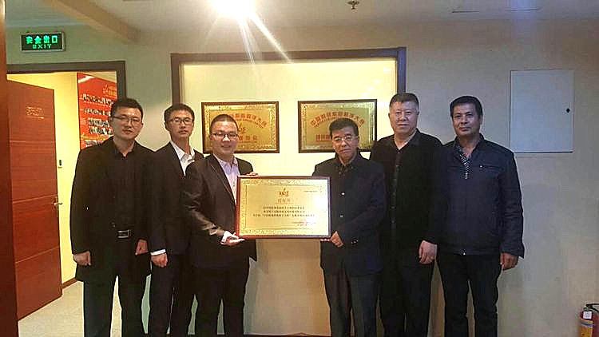
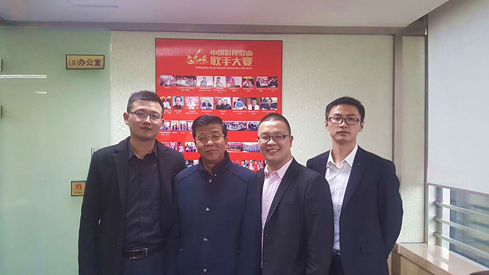

2017年3月11日，首届“中国影视歌曲歌手大赛”全国赛事组委会举行签约授权仪式，大赛组委会主席姜国顺将《授权书》郑重授予安徽省赛区组委会主席房展展，确定安徽鸿展文化传媒有限公司为安徽省赛区承办单位。标志着这届规模空前的赛事将在安徽省地区正式启动。
安徽省是中国戏曲之乡，戏剧表演艺术历史悠久，60年代，“黄梅戏”电影曾风靡一时，如林黛《王昭君》、李丽华《万古流芳》、李菁《女巡按》等都赢得极佳票房和口碑。其中《万古流芳》和《王昭君》弘扬正义传统、渲染家国情仇，以史诗气象、悲剧格局更是引人荡气回肠。所以，这次在安徽省开展“中国影视歌曲歌手大赛”有其特别的意义与影响，安徽省地区众多影视歌曲爱好者将能够通过这个平台向全国人民展示戏曲文化的魅力，通过全民参与，充分展现安徽人民的精神风貌，丰富安徽人民的精神文化生活。




上一篇： 湖南赛区启动仪式暨新闻发布会
下一篇： 大赛组织委员会新春的祝福暨联欢活动纪实